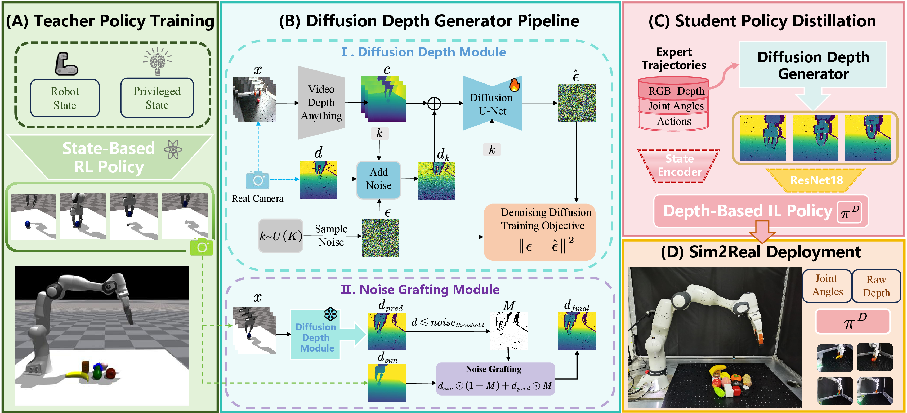

DiffuDepGrasp: Diffusion-based Depth Noise Modeling Empowers Sim2Real Robotic Grasping
Abstract
Transferring the depth-based end-to-end policy trained in simulation to physical robots can yield an efficient and robust grasping policy, yet sensor artifacts in real depth maps like voids and noise establish a significant sim2real gap that critically impedes policy transfer. Training-time strategies like procedural noise injection or learned mappings suffer from data inefficiency due to unrealistic noise simulation, which is often ineffective for grasping tasks that require fine manipulation or dependency on paired datasets heavily. Furthermore, leveraging foundation models to reduce the sim2real gap via intermediate representations fails to mitigate the domain shift fully and adds computational overhead during deployment. This work confronts dual challenges of data inefficiency and deployment complexity. We propose DiffuDepGrasp, a deploy-efficient sim2real framework enabling zero-shot transfer through simulation-exclusive policy training. Its core innovation, the Diffusion Depth Generator, synthesizes geometrically pristine simulation depth with learned sensor-realistic noise via two synergistic modules. The first Diffusion Depth Module leverages temporal geometric priors to enable sample-efficient training of a conditional diffusion model that captures complex sensor noise distributions, while the second Noise Grafting Module preserves metric accuracy during perceptual artifact injection. With only raw depth inputs during deployment, DiffuDepGrasp eliminates computational overhead and achieves a 95.7% average success rate on 12-object grasping with zero-shot transfer and strong generalization to unseen objects.
Method
Framework Overview
DiffuDepGrasp(DDG) is structured into four key stages. (A) Teacher Policy Training: An RL-based teacher policy is trained in simulation with privileged state information to generate expert demonstrations. (B) Diffusion Depth Generator: This core module learns to simulate realistic sensor noise. It consists of a Diffusion Depth Module that learns noise patterns from real data, and a Noise Grafting Module that injects these patterns into perfect simulation geometry. (C) Student Policy Distillation: The teacher's knowledge is distilled into a vision-based student policy using our generated high-fidelity depth data. (D) Sim2Real Deployment: The final student policy is deployed zero-shot on the physical robot.
Experiments
Baselines Comparison
(a) Simulated RGB and (f) Real-world RGB. (b) Clean ground-truth (GT) depth from simulation. (g) Raw, noisy depth from the real sensor. The inputs of baselines include: (c) GT depth with procedural random noise (Rand Noise), (h) inpainted real depth (Inpaint), and (d), (i) depth estimated by DAv2 from simulated and real RGBs. For comparison, (e) and (j) show the final, high-fidelity depth maps generated by our proposed DDG algorithm from the simulation and real-world data, respectively.
Qualitative Analysis of Our Generator
From top to bottom, the rows: (1) the original simulated RGB image; (2) the corresponding pristine, clean depth in simulation; (3) the generated depth maps of Diffusion Depth Module without Noise Grafting Module (DDG w/o G); and (4) the generated depth maps of Diffusion Depth Module with Noise Grafting Module (DDG).
t-SNE Feature Space Analysis
The t-SNE visualization shows the feature space alignment between simulated (orange) and real (blue) data. While baselines like Sim GT (a) and DAv2 (d) show clear separation, our methods (e, f) achieve significant overlap, indicating a much smaller domain gap at the feature level.
TABLE I: Quantitative Comparison of Sim-to-Real Data Generation Methods
The table quantifies the distributional distance between various simulated data generation methods and real-world sensor data. Our approach yields the lowest distance scores, signifying a closer statistical alignment and thus the highest degree of perceptual realism.
TABLE II: End-to-End Sim-to-Real Grasping Performance on Seen and Unseen Objects
The table reports the end-to-end grasping success rates of our method against several baselines. Our full approach outperforms all competitors on both seen and novel (unseen) objects, underscoring its superior generalization and robust zero-shot transfer capability.